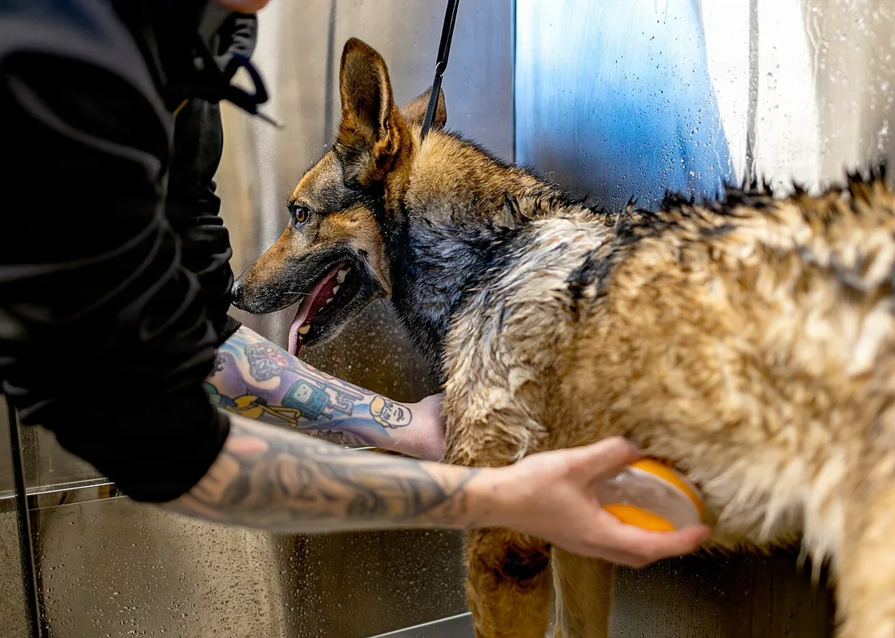
MWD Spa Day (9568307).jpg
U.S. Army photo by Sgt. 1st Class Tanisha Karn
Ảnh gốc / Public domainCác ảnh dưới đây đã được đổi kích thước, chuyển sang WebP và có thể được cắt khung khi hiển thị. Ảnh chuyển đổi giữ giấy phép tương ứng.

U.S. Army photo by Sgt. 1st Class Tanisha Karn
Ảnh gốc / Public domain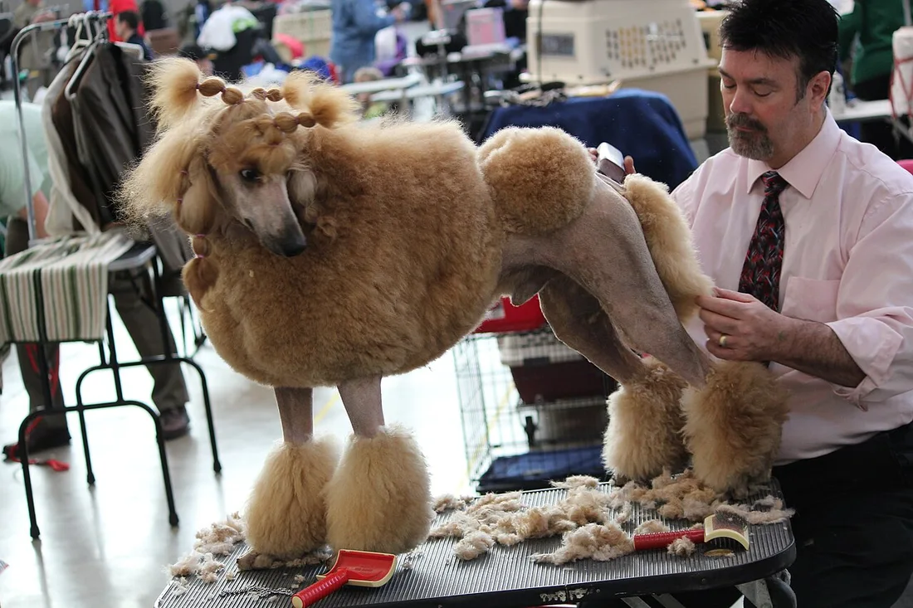
daveynin
Ảnh gốc / CC BY 2.0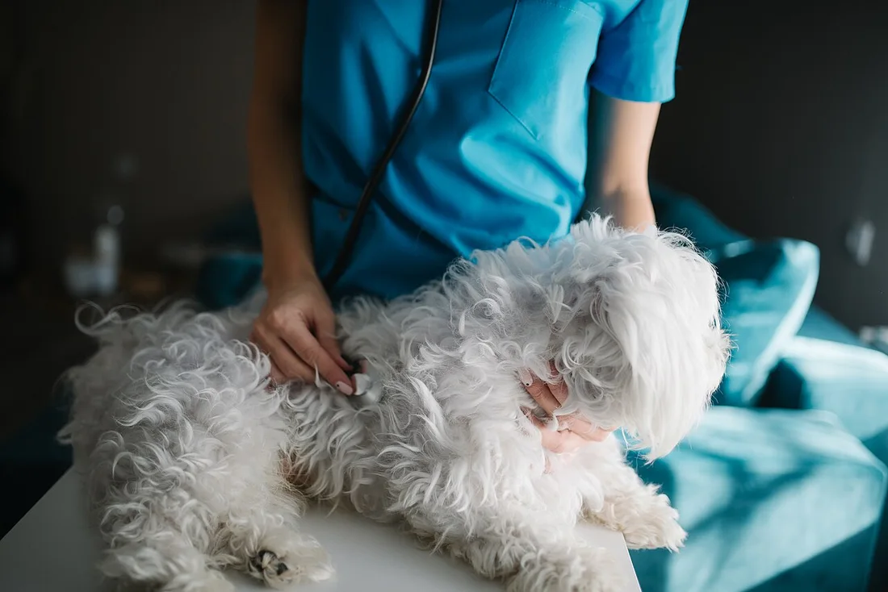
Nenad Stojkovic
Ảnh gốc / CC BY 2.0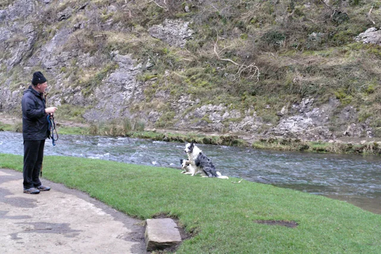
David Lally
Ảnh gốc / CC BY-SA 2.0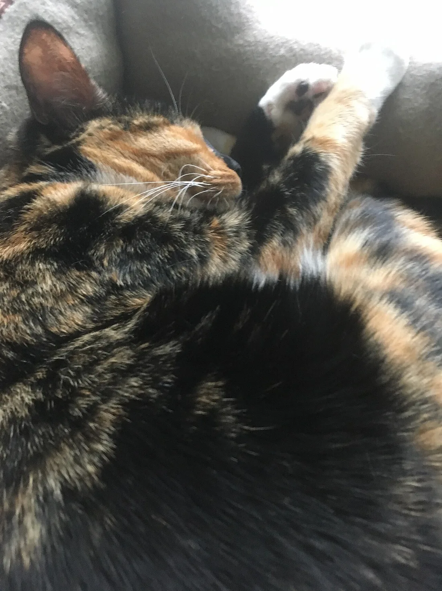
JW2009
Ảnh gốc / CC BY 4.0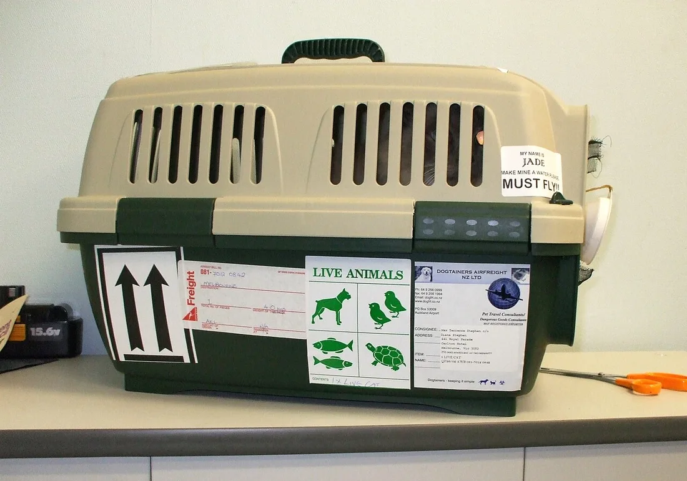
Chachacha369
Ảnh gốc / CC BY-SA 3.0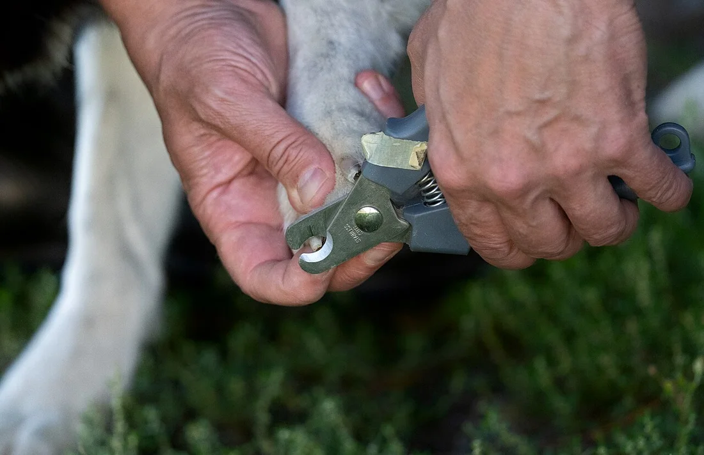
Santeri Viinamäki
Ảnh gốc / CC BY-SA 4.0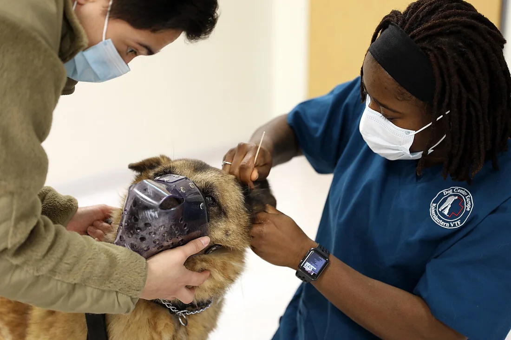
U.S. Army RHCE by Russell Toof
Ảnh gốc / Public domain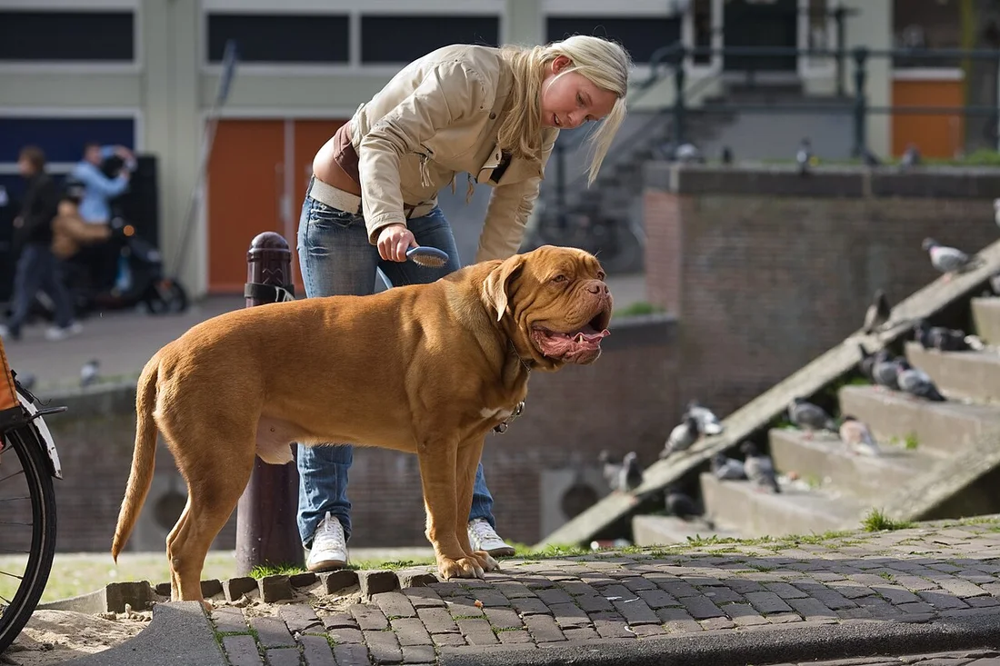
Jorge Royan
Ảnh gốc / CC BY-SA 3.0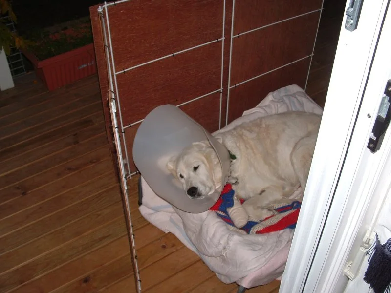
Ta bu shi da yu at English Wikipedia
Ảnh gốc / CC BY-SA 3.0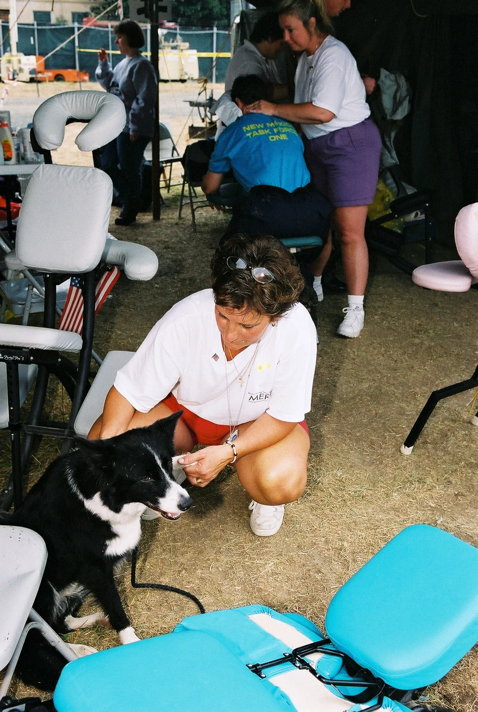
Jocelyn Augustino
Ảnh gốc / Public domain